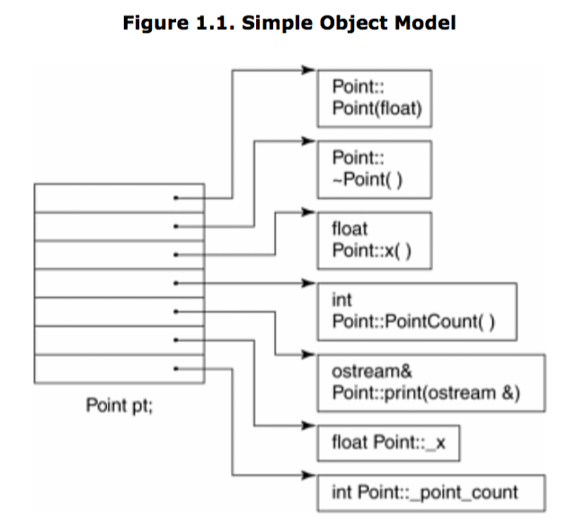
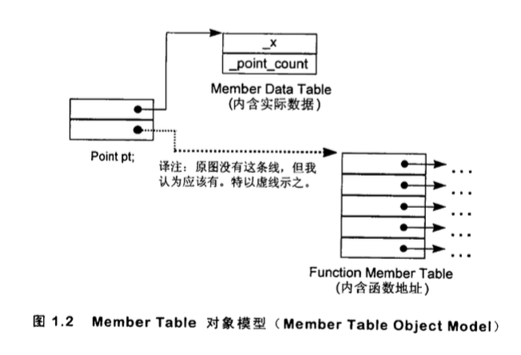
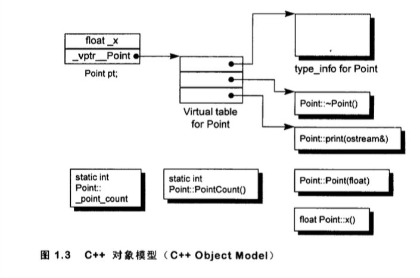
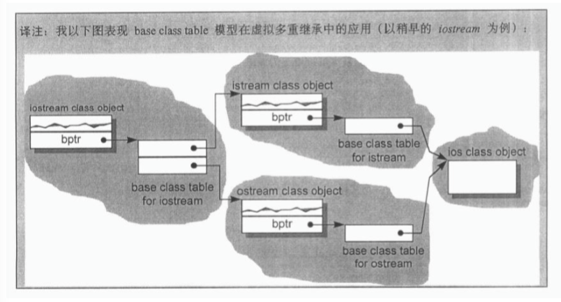
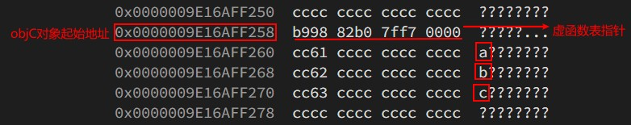
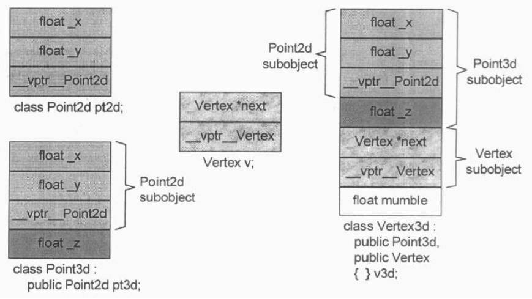
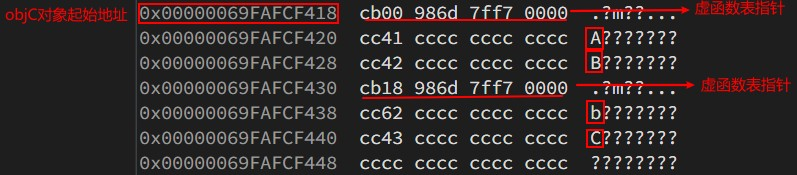
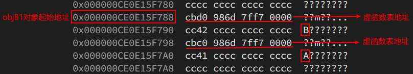
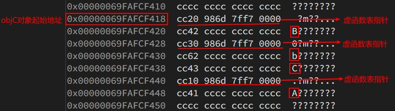
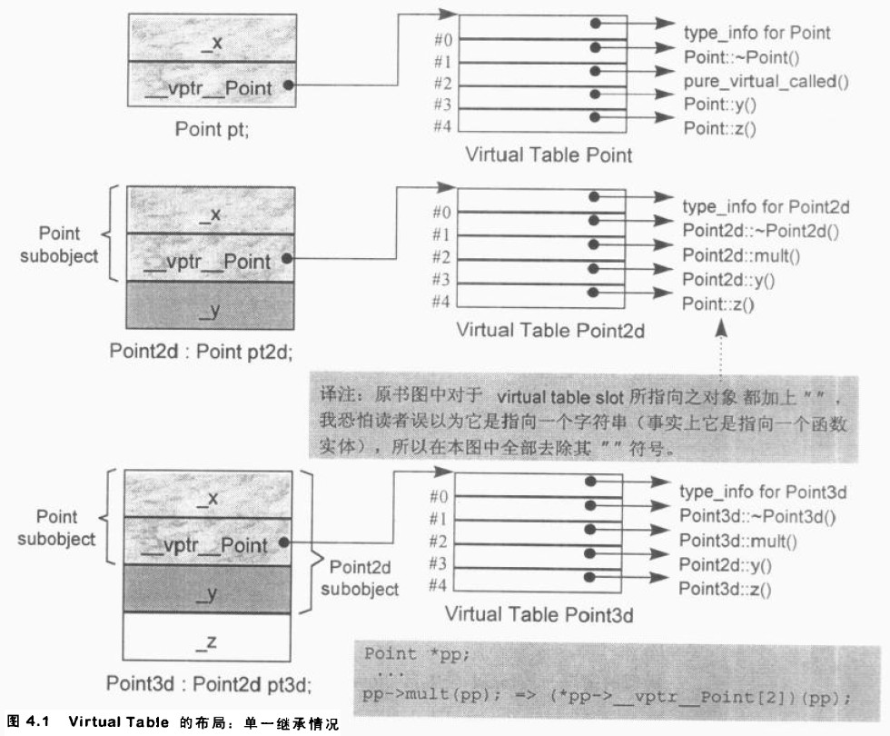

Inside The C++ Object Model
Table of Contents
- 1 Object Lessons
- 2 The Semantics of Constructors
- 3 The Semantics of Data
- 4 The Semantics of Function
- 5 Semantics of Construction,Destruction,and Copy
- 6 Runtime Semantics
- 7 On the Cusp of the Object Model
- Q&A:
总的来说这本书讲了编译器在你的 C++代码上又做了哪些手脚.
1 Object Lessons
C++对象模型
c++有两种类数据成员：静态和非静态，以及三种类成员函数：静态，非静态以及虚函数。
如何模型出各种数据成员和函数成员呢？
简单对象模型

一个对象是一系列的 slots，每个 slot 指向一个成员。
表格对象驱动模型

把所有与成员相关的信息抽出来，放在一个数据成员表和一个成员函数表中。一个对象内含有指向这两个表格的指针。
C++对象模型

在此模型中，非静态数据成员被配置于每一个对象之内，静态数据成员则被放在所有对象之外，静态和非静态函数成员也被放在所有对象之外。虚函数通过下面
两个步骤支持：
- 每个类产生出一堆指向虚函数的指针，放在表格中。这个表被称为虚表。
- 每个类对象被添加一个指针，指向相关的虚表。通常这个指针被称为 vptr。vptr 的设定和重置都由每一个类的 constructor,destructor 和
copy assignment 运算符自动完成。每个类所关联的 type_info 对象也经由虚表被指出来，通常放在虚表的第一个 slot 处。
优缺点：
C++对象模型的主要缺点是，如果应用程序代码本身没有改变，只是用到的类的非静态数据成员有改变，这些应用程序的代码也需要重新编译。
表格对象驱动模型没有上述缺点，因为它提供了一层间接层，但是表格对象驱动模型空间和执行效率比较差。
加入继承
简单对象模型
简单对象模型中，每一个基类子对象可以由派生类内的一个 slot 指出。
基类表模型
基表模型中，产生出一个基类表，表格中的每一个 slot 内含一个相关的 base class 地址。
每一个类对象内含有一个 bptr，它被初始化，指向其基表。

C++对象模型
C++基类子对象的数据被直接放到派生类对象中。对于虚基类，则在类对象中为每个关联的虚基类对象加上一个指针。
对象模型如何影响程序
不同的对象模型，会导致“现有的程序代码必须修改”以及“必须加入新的程序代码”两个结果。
X foobar() { X xx; X *px = new X; // foo() is virtual function xx.foo(); px->foo(); delete px; return xx; }; // 上面的代码会被转换为下面的代码 // Pseudo C++ code void foobar( X &_result ) { // construct _result // _result replaces local xx ... _result.X::X(); // expand X *px = new X; px = _new( sizeof( X )); if ( px != 0 ) px->X::X(); // expand xx.foo(): suppress virtual mechanism // replace xx with _result foo( &_result ); // expand px->foo() using virtual mechanism ( *px->_vtbl[ 2 ] )( px ) // expand delete px; if ( px != 0 ) { ( *px->_vtbl[ 1 ] )( px ); // destructor _delete( px ); } // replace named return statement // no need to destroy local object xx return; };
关键字带来的差异
在 C 所支持的 struct 和 C++所支持的 class 之间，有观念上的重要差异，但是，关键词本身并不提供这种差异。
C struct 在 C++中的一个合理用途，是当你需要传递“一个复杂的类对象的全部或部分”到某个 C 函数中去时，struct 声明可以将数据封装起来，并保证
拥有与 C 兼容的空间布局。这项保证只在组合的情况下才存在。如果是继承而不是组合，编译器会决定是否应该有额外的数据成员被安插到 base struct 子
对象中。
对象的差异
C++以下列方法支持多态：
- 经由一组隐含的转换操作。例如把一个派生类指针转化为一个指向其 public base type 的指针。
shape* ps = new circle(); - 经由 virtual function 机制：
ps->rotate(); - 经由 dynamic_cast 和 typeid 运算符：
if( circle* pc = dynamic_cast<circle*>(ps) ) …
指针的类型
不同类型的指针，以内存需求的观点来说，没有什么不同。它们都需要足够的内存来放置一个机器地址。指向不同类型之各指针间的差异，既不在其指针表示法不同，
也不再其内容不同，而是在其所寻址出来的 object 类型不同。也就是说，“指针类型”会教导编译器如何解释某个特定地址中的内存内容及其大小。
一个 void*的指针不包含其所指对象类型的信息，所以只能够含有一个地址，而不能够通过它操作所指对象。
转型其实是一种编译器指令。大部分情况下它并不改变一个指针所含的真正地址，它只影响“被指出之内存的大小和其内容”的解释方式。
OB 与 OO
一个基于对象(object-based)的设计可能比一个对等的面向对象(OO)的设计速度更快而且空间更紧凑。速度快是因为所有的函数引发操作都在编译时期解析完
成，对象建构起来时不需要设置 virtual 机制；空间紧凑则是因为每个类对象不需要负担为了支持 virtual 机制而需要的额外负荷。不过，OB 设计比较没
有弹性。需要在弹性和效率之间进行权衡来进行取舍。
2 The Semantics of Constructors
Default Constructor Construction
什么时候才会合成出一个 Default Constructor? 当编译器需要的时候!而且，被合成出来的 constructor 只执行编译器所需要的行动。
对于类 X，如果没有任何用户定义的构造函数，会有一个默认的构造函数被声明。编译器不需要的默认构造函数被称为 trivial default constructor(无用的默认构造函数)，由于编译器需要而由编译器合成的默认构造函数被称为 nontrivial default constructor(有用的默认构造函数)。
下面四种情况下，编译器需要合成默认构造函数：
成员类对象带有默认的构造函数
如果一个类没有任何构造函数，但它内含一个成员对象，而这个成员对象有默认构造函数。那么编译器需要为此类合成出一个默认构造函数。不过这个合成操作只有在默认构造函数被调用时才会发生。
如果一个类 A 有默认构造函数，它内含一个成员对象 b（类型为 class B），该成员对象也有默认构造函数，但是在类 A 的默认构造函数中，没有调用类 B 的默认构造函数。此时，编译器会扩展类 A 的默认构造函数，将对类 B 的默认构造函数调用插入进去。
// programmer defined default constructor Bar::Bar() { str = 0; } // 上面的代码会被转换为下面的代码 // Augmented default constructor // Pseudo C++ Code Bar::Bar() { foo.Foo::Foo(); // augmented compiler code str = 0; // explicit user code }
基类带有默认的构造函数
如果一个没有任何构造函数的类派生自一个带有默认构造函数的基类。那么编译器需要为此类合成出一个默认构造函数。它将调用上一层基类的默认构造函数。
如果类包含多个构造函数，但其中没有默认构造函数。那么编译器会扩展现有的每一个构造函数，将调用默认构造函数的程序代码加入进去。编译器不会合成一个新的构造函数，因为有其他用户定义的构造函数存在。
类带有一个或多个虚函数
为了支持虚函数机制，编译器必须为每个含有虚函数类的对象设置虚指针（vptr）初值,放置适当的虚表地址。对于类所定义的每一个构造函数，编译器会安插一些代码来做这样的事情。对于那些未声明任何构造函数的类，编译器会为它们合成一个默认构造函数，以便正确地初始化每一个类对象的 vptr。
类带有一个或多个虚基类
对于类所定义的每一个构造函数，编译器会安插那些“允许每一个 virtual base class 的执行期存取操作”的码。如果一个类没有任何构造函数，编译器
会为它们合成一个默认构造函数。
class X { public: int i; }; class A : public virtual X { public: int j; }; class B : public virtual X { public: double d; }; class C : public A, public B { public: int k; }; // cannot resolve location of pa->X::i at compile-time void foo( const A* pa ) { pa->i = 1024; } main() { foo( new A ); foo( new C ); // ... } // 上面 foo 的代码会被转换为下面的代码 // possible compiler transformation void foo( const A* pa ) { pa->__vbcX->i = 1024; }
Copy Constructor Construction
有三种情况，会以一个 object 的内容作为另一个类对象的初值：
class X { ... }; X x; // 第一种情况，显式用一个对象初始化另一个对象 // explicit initialization of one class object with another X xx = x; extern void foo( X x ); void bar() { X xx; // 第二种情况，隐式初始化函数参数 // implicit initialization of foo()'s // first argument with xx foo( xx ); // ... } X foo_bar() { X xx; // 第三种情况，函数返回一个类对象 // ...; return xx; }
如果类没有声明一个 copy constructor，就会有隐含的声明和隐含的定义。和以前一样 C++标准把 copy constructor 区分为 trivial 和
nontrivial 两种。只有 nontrivial 的实体才会被合成于程序中。
决定一个 copy constructor 是否为 nontrivial 的标准在于 class 是否展现出 bitwise copy semantics。
基于位的 copy 语义(Bitwise copy Semantics)
// 下面的声明展现了基于位的 copy 语义 class Word { public: Word( const char* ); ~Word() { delete [] str; } // ... private: int cnt; char *str; }; // 下面的声明没有展现了基于位的 copy 语义 // declaration does not exhibits bitwise copy semantics class Word { public: Word( const String& ); ~Word(); // ... private: int cnt; String str; }; // where String declares an explicit copy constructor: class String { public: String( const char * ); String( const String& ); ~String(); // ... }; // In this case, the compiler needs to synthesize a copy constructor in order to invoke the // copy constructor of the member class String object: // A synthesized copy constructor // Pseudo C++ Code inline Word::Word( const Word& wd ) { str.String::String( wd.str ); cnt = wd.cnt; }
什么时候类不展现基于位的 copy 语义
当类内含一个成员对象，而后者的类定义了一个 copy 构造函数。
编译器需要将成员的 copy 构造调用操作安插到被合成的 copy 构造函数中。
当类继承自一个基类而后者存在有一个 copy constructor。
编译器需要将基类的 copy 构造调用操作安插到被合成的 copy 构造函数中。
当类声明了一个或多个虚函数。
编译器需要重新设定虚指针。
合成出来的类 A 的 copy 构造函数会明确设定对象的 vptr 指向类 A 的虚表，而不是直接从右手边的类对象中将其 vptr 直接 copy 过来。
(这样可以避免使用一个派生类对象来初始化基类对象时，基类对象的 vptr 错误指向派生类对象的虚表)
当类派生自一个继承串链，其中有一个或多个虚基类。
编译器需要处理虚基类子对象。
程序转化语义学
明确的初始化操作
void foo_bar() { X x1( x0 ); X x2 = x0; X x3 = x( x0 ); // ... } //上面的代码会被转换为下面的代码 // Possible program transformation // Pseudo C++ Code void foo_bar() { X x1; //定义被重写，初始化操作被剥离 X x2; //同上 X x3; //同上 // compiler inserted invocations // of copy constructor for X x1.X::X( x0 ); x2.X::X( x0 ); x3.X::X( x0 ); // ... }
参数的初始化
X xx; // ... foo( xx ); // 上面的代码会被转换为下面的代码 // Pseudo C++ code // compiler generated temporary X __temp0; // compiler invocation of copy constructor __temp0.X::X ( xx ); // rewrite function call to take temporary foo( __temp0 ); 并且 foo 会被修改为 void foo( X& x0 );
返回值的初始化
X bar() { X xx; // process xx ... return xx; } // 上面的代码会被转换为下面的代码 // function transformation to reflect application of copy constructor // Pseudo C++ Code void bar( X& __result ) { X xx; // compiler generated invocation // of default constructor xx.X::X(); // ... process xx // compiler generated invocation // of copy constructor __result.X::X( xx ); return; } //并且所有调用 bar 的函数需要进行修改： // 情况 1 X xx = bar(); // is transformed into the following two statements. // note: no default constructor applied X xx; bar( xx ); // 情况 2 bar().memfunc(); // compiler generated temporary X __temp0; ( bar( __temp0 ), __temp0 ).memfunc(); // 情况 3 void ( *pf )( X& ); pf = bar;
返回值优化
在使用者层面做优化
定义一个计算用的 constructor。这样可能导致计算用途的 construtor 大量扩散。
X bar() { X xx; // ... process xx return xx; } // 将上面的代码写为下面这种形式 X bar(const T&y, const T&z) { return X(y, z); } // 然后编译器会将其转化为 void bar( X &__result, const T&y, const T&z) { __result.X::X(y, z); return; }
在编译器层面做优化
对于所有的 return 语句返回有名字对象的情况，编译器可以对其进行优化，方法为将返回值按照参数传递给该函数，这样的优化操作被称为 Named Return Value 优化。
因为 Named Return Value 优化是为了避免 copy constructor 的调用，所以当用户没有定义类的 copy 构造函数时，该优化不会实施，显式定义一个 copy 构造函数会激活 Named Return Value 优化。
Named Return Value 优化提供了重要的效率改善，也受到了一些批评，受到批评的原因有：
1 该优化由编译器默默完成，是否真的实施并不清楚。
2 一旦函数变得复杂，优化就变得比较难以实施，有可能该优化就不会实施。
3 该优化移除了函数内局部对象的构造和析构，改变了程序内容。
X bar() { X xx; // ... process xx return xx; } // 上面的代码会被转换为下面的代码 void bar( X &__result ) { // default constructor invocation // Pseudo C++ Code __result.X::X(); // ... process in __result directly return; }
成员们的初始化列表
下列情况下，为了让你的程序能够被顺利编译，你必须使用 member initialization list:
1 当初始化一个引用成员时；
2 当初始化一个 const 成员时；
3 当调用一个基类的构造函数时，而它拥有一组参数；
4 当调用一个成员类的构造函数时，而它拥有一组参数；
编译器会对初始化列表一一处理并可能重新排序，以反映出成员在类的声明顺序，它会将初始化操作安插到构造函数体内，并置于任何显式的用户代码之前。
3 The Semantics of Data
影响类对象大小的三个因素：
1 语言本身所造成的额外负担。由于支持某些语言特性（主要是各种 virtual 特性），编译器自动加上了额外的数据成员。
2 编译器对特殊情况提供的优化处理
3 Alignment 的限制
数据成员的绑定
对成员函数本身的分析，会直到整个类的声明都出现了才开始。但是对于成员函数的参数列表并不是这样的，参数列表中的名称还是会在它们第一次被遇到时被适当地决议完成。所以，应该将嵌套在类内的类型声明放置在类的起始位置。
数据成员的布局
静态数据成员存放在程序的数据段中，和个别的类对象无关。
C++标准要求，在同一个 access section 中，成员的排列只需符合较晚出现的成员在类对象中有较高的地址。也就是说各个成员并不一定得连续排列。
成员变量之间可能会由于字节对齐而填充一些字节。
编译器合成的内部数据成员，可能会放置在对象的最后，也可能放在最前，对此 C++标准并没有规定。
// 下面的代码可以判断类成员的出现顺序 template< class class_type, class data_type1, class data_type2 > char* access_order( data_type1 class_type::*mem1, data_type2 class_type::*mem2 ) { assert ( mem1 != mem2 ); return mem1 < mem2 ? "member 1 occurs first" : "member 2 occurs first"; }
数据成员的存取
静态数据成员
每一个静态数据成员只有一个实体，存放在程序的数据段之中，每次程序取用静态数据成员，就会被内部转化为对该唯一的 extern 实体的直接参考操作。
对一个静态数据成员取地址，会得到一个指向其数据类型的指针，而不是一个指向类成员的指针。
编译器会对每个静态数据成员编码（name-mangling）,从而获得一个独一无二的名称，避免重名。
非静态数据成员
非静态数据成员直接存放在每一个类对象之中。对一个非静态数据成员进行存取操作，编译器需要把类对象的起始地址加上数据成员的偏移量。
origin._y = 0.0; // 那么地址&origin._y 将等于 &origin+(&Point3d::y-1); // Tips： // 指向数据成员的指针，其值总是被加上 1，这样可以使编译系统区分“一个指向数据成员的指针，用以指出类的第一个成员”和“一个指向数据成员的指针，没有指出任何成员两种情况”。
每一个非静态数据成员的偏移量在编译时期即可获得，甚至该成员属于一个基类子对象。所以存取一个非静态数据成员，其效率和存取一个 C 结构体成员或一个没有继承的成员是一样的。
如果非静态数据成员为一个虚基类成员，那么通过指针对该成员的存取速度会变慢。因为无法确定指针必然指向哪种类类型，所以这个存取操作必须延迟到执行期，经由一个额外的间接引导，才能够解决。
继承的数据成员
C++标准没有强制指定派生类成员和基类成员的排列次序。大部分编译器，基类成员总是先出现，但虚基类除外。
没有多态的继承
把一个类分解为两层或者更多层，有可能会为了表现类体系之抽象化而膨胀所需空间。因为 C++语言保证出现在派生类中的基类子对象有其完整原样性。
// 32位机器上，Concrete类对象大小为8Byte // val(4Byte) + c1(1Byte) + c2(1Byte) + c3(1Byte) + 字填充字节(1Byte) = 8Byte class Concrete { public: // ... private: int val; char c1; char c2; char c3; }; // 将上面的Concret类分解为下面三个类 // Concrete1 类对象大小为 8Byte val(4Byte) + c1(1Byte) + 字填充字节(1Byte) class Concrete1 { public: // ... protected: int val; char c1; }; class Concrete2 : public Concrete1 { public: // ... protected: char c2; }; class Concrete3 : public Concrete2 { public: // ... protected: char c3; };
加上多态以后
支持多态后产生的额外负担：
1 导入一个和 Point2d 相关的虚表，用来存放它所声明的每一个虚函数地址。这个虚表的元素数目一般而言是被声明的虚函数的数目，再加上一个或两个 slots(用以支持 runtime type identification)
2 在每一个类对象中导入一个 vptr，提供执行期的链接，使每一个对象能够找到相应的虚表。
3 加强 constructor，使它能够为 vptr 设定初值，让它指向所对应的虚表。
4 加强 destructor，使它能够抹消指向类之相关虚表的指针。
class Point2d { public: Point2d( float x = 0.0, float y = 0.0 ) : _x( x ), _y( y ) {}; // access functions for x & y same as above // invariant across type: not made virtual // add placeholders for z — do nothing ... virtual float z(){ return 0.0 }; virtual void z( float ) {} // turn type explicit operations virtual virtual void operator+=( const Point2d& rhs ) { _x += rhs.x(); _y += rhs.y(); } // ... more members protected: float _x, _y; }; class Point3d : public Point2d { public: Point3d( float x = 0.0, float y = 0.0, float z = 0.0 ) : Point2d( x, y ), _z( z ) {}; float z() { return _z; } void z( float newZ ) { _z = newZ; } void operator+=( const Point2d& rhs ) { Point2d::operator+=( rhs ); _z += rhs.z(); } // ... more members protected: float _z; };
虚表指针放在类对象前端还是末尾？
- 虚表指针放在尾端可以保留 base class C struct 的对象布局。可以将 C++对象直接传递给 c 函数进行处理。
struct no_virts { int d1; int d2; }; class has_virts : public no_virts { public: virtual void foo(); private: int d3; }
- 虚表指针放在类对象前端，对于“在多重继承之下，通过指向类成员的指针调用虚函数”，会带来一些帮助。否则，不仅“从类对象起始点开始量起”的 offset 必须在执行器备妥，甚至 class vptr 之间的 offset 也必须备妥。
- 具体内容可以参考 多重继承下，指向成员函数的指针
如何判断当前编译器虚表指针放置位置？
方法 1
debug 查看对象成员，得到对象的地址，和虚表指针成员的内容。
查看内存，跳转到对象地址所在内存，看其实内容和虚表指针成员的内容是否一致，如果一致，则说明虚表指针放在了对象前端，否则是末端。
方法 2
打印下面类对象地址和类成员地址，比较地址，如果类对象地址比成员地址小 4，说明虚指针在对象前端，否则是末端。
class A { public: char a='a'; virtual void test() {printf("a = %c\n", a);} }; int main() { A aObj; printf("aObj.a addr = %d\n", &(aObj.a)); printf("aObj addr = %d\n", &aObj); return 0; }
多态导致的内存消耗
class A { public: char a='a'; virtual void test() { printf("a = %c\n", a); } }; class B :public A { public: char b='b'; virtual void test() { printf("b::test = %c\n", b); } virtual void test1() { printf("b::test1 = %c\n", b); } }; class C :public B { public: char c='c'; virtual void test() { printf("c::test = %c\n", c); } virtual void test1() { printf("c::test1 = %c\n", c); } virtual void test2() { printf("c::test2 = %c\n", c); } }; int main() { printf("sizeof(A) = %d\n", sizeof(A)); // 类A的对象的内存大小为8字节 _vfptr(8) a(8) printf("sizeof(B) = %d\n", sizeof(B)); // 类B的对象的内存大小为12字节 _vfptr(8) a(8) b(8) printf("sizeof(C) = %d\n", sizeof(C)); // 类C的对象的内存大小为16字节 _vfptr(8) a(8) b(8) c(8) } // sizeof(A) = 16 // sizeof(B) = 24 // sizeof(C) = 32

多重继承
- 多重继承的问题主要发生于派生类对象和其第二或后继基类对象之间的转换。
对一个多重派生对象，将其地址指定给最左端（也就是第一个）基类的指针，情况将和单一继承相同，因为二者都指向相同的起始地址。
至于第二或后继基类的地址指定操作，则需要将地址进行修改，加上（或减去，如果 downcast 的话）介于中间的子类对象的大小。
// Point2d Vertex // | | // Point3d | // |_________| // | // Vertex3d // class Point2d{} class Point3d: public Point2d{} class Vertex{} class Vertex3d : public Point3d, public Vertex {} Vertex3d v3d; Vertex *pv; Point2d *pp; Point3d *p3d; pv = &v3d; // 上面的代码会被转换为下面的代码 Pseudo C++ Code pv = (Vertex*)(((char*)&v3d) + sizeof( Point3d )); pv = p3d; // 上面的代码会被转换为下面的代码 Pseudo C++ Code pv = p3d ? (Vertex*)((char*)p3d) + sizeof( Point3d ) : 0;

2 对于第二或后继基类中的数据成员的存储是不需要付出额外成本的，因为成员的位置在编译时就固定下了，因此存取成员只是一个简单的 offset 运算。
多重继承导致的内存消耗
namespace MultiInherit { class L3A { public: char l3a = 'A'; virtual void test0() { printf("L3A::test0 func \n"); } }; class L3B1 : public L3A { public: char l3b1 = 'B'; virtual void test0() { printf("L3B1::test0 func \n"); } }; class L3B2 { public: char l3b2 = 'b'; virtual void test0() { printf("L3B2::test0 func \n"); } }; class L3C1 : public L3B1,public L3B2 { public: char l3c1 = 'C'; virtual void test0() { printf("L3C1::test0 func \n"); } }; void func3() { L3A objA; L3B1 objB1; L3B2 objB2; L3C1 objC1; printf("sizeof(mi-L3A) = %lu\n", sizeof(L3A)); //_vfptr(8) l3a(8) printf("sizeof(mi-L3B1) = %lu\n", sizeof(L3B1)); //_vfptr(8) l3a(8) l3b1(8) printf("sizeof(mi-L3C1) = %lu\n", sizeof(L3C1)); //_vfptr(8) l3a(8) l3b1(8) _vfptr(8) l3b2(8) l3c1(8) } } // sizeof(mi-L3A) = 16 // sizeof(mi-L3B1) = 24 // sizeof(mi-L3C1) = 48

虚拟继承
类如果内含一个或多个虚基类子对象，其将被分割为两个部分：一个不变局部和一个共享局部。不变局部中的数据，不管后继如何衍化，总是拥有固定的 offset（从对象的开头算起），所以这部分数据可以被直接存取。至于共享局部，存储的就是虚拟基类子对象，这部分数据，其位置会因为每次的派生操作而有变化，所以他们只可以被间接存取。一般的布局策略是先安排好派生类的不变部分，然后再建立其共享部分。
通过对象对虚基类中的数据成员的存取可以被优化为一个直接存取操作。
通过指针、引用对虚基类中的数据成员的存取则只能通过虚基类指针间接进行操作。
// Point2d // ____|_____ // | | // Point3d Vertex // |_________| // | // Vertex3d // class Point2d{} class Vertex : public virtual Point2d {} class Point3d : public virtual Point2d {} class Vertex3d : public Vertex, public Point3d {} void Point3d::operator+=(const Point3d &rhs) { // 下面代码被编译器改为 __vbcPoint2d->_x += rhs.__vbcPoint2d->x; _x += rhs._x; // 下面代码被编译器改为 __vbcPoint2d->_y += rhs.__vbcPoint2d->y; _y += rhs._y; // 下面代码编译器不做修改 _z += rhs._z; } // Point2d* p2d = pv3d ? pv3d->__vbcPoint2d : 0; Point2d* p2d = pv3d;
上面的模型有两个缺点：
- 每个对象必须针对每一个虚基类背负一个额外的指针。理想的情况是，类对象的存储负担应该是固定的，不因为虚基类数目而变化。
- 由于虚拟继承串链的加长，导致间接存取层次的增加。理想的情况是，存取消耗的时间应该是固定的，不因为虚拟衍化的深度而变化。
多重虚拟继承导致的内存消耗
namespace MultiVirtualInherit { class L3A { public: char l3a = 'A'; virtual void test0() { printf("L3A::test0 func \n"); } }; class L3B1 : public virtual L3A { public: char l3b1 = 'B'; virtual void test0() { printf("L3B1::test0 func \n"); } }; class L3B2 : public virtual L3A { public: char l3b2 = 'b'; virtual void test0() { printf("L3B2::test0 func \n"); } }; class L3C1 : public L3B1,public L3B2 { public: char l3c1 = 'C'; virtual void test0() { printf("L3C1::test0 func \n"); } }; void func3() { L3A objA; L3B1 objB1; L3B2 objB2; L3C1 objC1; printf("sizeof(mvi-L3A) = %lu\n", sizeof(L3A)); //A_vfptr(8) l3a(8) printf("sizeof(mvi-L3B1) = %lu\n", sizeof(L3B1)); //B1_vfptr(8) l3b1(8) A_vfptr(8) l3a(8) printf("sizeof(mvi-L3C1) = %lu\n", sizeof(L3C1)); //B1_vfptr(8) l3b1(8) B2_vfptr(8) l3b2(8) l3c1(8) A_vfptr(8) l3a(8) } } // sizeof(mvi-L3A) = 16 // sizeof(mvi-L3B1) = 32 // sizeof(mvi-L3C1) = 56


数据成员的效率
打开优化后 inline get/set 函数和 struct public 成员的存取效率相同。
虚拟继承后，对虚基类成员的存取消耗会增大。
指向数据成员的指针
指向数据成员的指针表示了该成员在类对象中的偏移量。
如何确定 vptr 是放在类的起始处还是尾端。
定义一个类其中放置两个数据成员，不包含虚函数，打印类成员变量的指针。为这个类定义一个虚函数，再次打印成员变量的指针。如果有变化说明 vptr 被放
在了类的起始地址，如果没有变化说明 vptr 被放在类成员的末尾了。
指向数据成员的指针的效率问题
以指向成员的指针来存取数据会导致效率变慢。开启优化后效率和通过对象直接存取相同。
虚拟继承的情况下，通过指针存取虚基类对象的成员消耗会增大。
Tips: vc++中虚基类对象和类其他成员布局在一起，对虚基类成员的存取应该和其他类型成员的存取消耗相同。
4 The Semantics of Function
成员函数的各种调用方式
非静态成员函数
C++的设计准则之一就是非静态成员函数至少和一般的非成员函数有相同的效率。选择成员函数不应该带来什么额外的负担。
成员函数被内化为非成员函数，转化步骤如下：
1 改写函数的签名以安插一个额外的参数到成员函数中，用以提供一个存取管道，使类对象得以调用该函数。该额外参数被称为 this 指针。
2 将“每一个对非静态数据成员的存取操作”改为“经由 this 指针来存取”
3 将成员函数重新写成一个外部函数。对函数名称进行 mangling 处理，使它在程序中成为独一无二的语汇
// 原始成员函数 Point3d Point3d::magnitude() { return sqrt(_x * _x + _y * _y + _z * _z); } // step 1 Point3d Point3d::magnitude( Point3d *const this ) Point3d Point3d::magnitude( const Point3d *const this ) // step 2 { return sqrt(this->_x * this->_x + this->_y * this->_y + this->_z * this->_z ); } // step 3 extern magnitude__7Point3dFv( register Point3d *const this ); // 代码中的转化 obj.magnitude(); // 变为 magnitude__7Point3dFv( &obj ); ptr->magnitude(); // 变为 magnitude__7Point3dFv( ptr );
虚成员函数
ptr->normalize(); // 上面的代码会被转换为下面的代码 (*ptr->vptr[1])( ptr );
静态成员函数
对一个静态成员函数取地址获得的是这个函数在内存中的地址。由于静态成员函数没有 this 指针，所以其地址的类型并不是一个指向类成员函数的指针。
虚拟成员函数
无继承或单继承下的虚函数
当一个类包含虚函数时，该类支持多态。为了支持多态，编译器需要执行如下操作：
- 编译器为类构建一个虚函数表，其中包含了虚函数的地址。（一个类只会有一个虚函数表，其中含有类对象中所有激活的虚函数实体的地址）
- 每个类对象被安插一个编译器内部产生的指针，指向虚函数表格。
- 每个虚函数被指派一个表格索引值。

ptr->z(); // 我们不知道ptr所指的对象的真正类型，但是，我们知道，经由ptr可以访问到该对象的virtual table // 虽然，不知道哪个z()函数的实体会被调用，但是我们知道每个z()函数地址都被放在slot4，因此，上面的代码被编译器转化为： (ptr->vptr[4])(ptr);
多重继承下的虚函数
在多重继承下支持虚函数，其复杂度围绕在第二个即后继的 base 类身上，以及必须在执行期调整 this 指针这一点上。
在多重继承下，一个派生类内含有多个额外的虚函数表。所以，虚表指针成员也需要 name mangling 技术。
有三种情况，第二或后继的 base class 会影响对虚函数的支持。
1 通过一个指向第二基类的指针，调用派生类虚函数。
Base2 *ptr = new Derived; // invokes Derived::~Derived // ptr must be adjusted backward by sizeof( Base1 ) delete ptr;
2 通过一个指向派生类的指针，调用第二基类中继承而来的虚函数。在这种情况下，派生类指针必须再次调整，以指向第二个基类子对象。
Derived *pder = new Derived; // invokes Base2::mumble() // pder must be adjusted forward by sizeof( Base1 ) pder->mumble();
3 允许一个虚函数的返回值类型有所变化，可能是基类，也可能是派生类。
Base2 *pb1 = new Derived; // invokes Derived* Derived::clone() // return must be adjusted to address Base2 subobject Base2 *pb2 = pb1->clone();
虚拟继承下的虚函数
这种情况很复杂。
TODO 函数的效能
指向成员函数的指针
取一个非静态成员函数的地址，如果该函数为非虚函数，则得到它在内存中的真正地址。然而这个值也不是完全的，它需要被绑定于某个类对象的地址上，才能够通过它来调用该函数。
指向成员函数的指针的声明语法，以及指向成员选择运算符的指针，其作用是作为 this 指针的空间保留者。
指向成员函数的指针，其声明语法如下： double // return type ( Point::*pmf ) // class the function is member name of pointer to member (); // argument list // 定义初始化成员函数指针 double (Point::*coord)() = &Point::x; // 通过指向成员函数的指针来调用成员函数 ( origin.*coord )(); // 或者 ( ptr->*coord )(); // 或者 ( coord )( & origin ); // 或者 ( coord )( ptr ); // 或者 // Tips: // 取构造函数和析构函数的地址是不被允许的，无法通过编译。 // 下面代码无法通过编译 printf("Point::Point = %p\n", &Point::Point); printf("Point::~Point = %p\n", &Point::~Point);
使用一个成员函数指针，如果并不用于 virtual 函数、多重继承、虚基类等情况的话，并不会比使用一个非成员函数指针的成本更高。
支持指向虚成员函数的指针
对一个 virtual 成员函数取地址，所能获得的只是一个虚表中的索引值。
float (Point::*pmf)() = &Point::z; Point *ptr = new Point3d; ptr->*pmf(); // 在cfront2.0非正式版中，上面的代码被编译器改为 // ( ((int)pmf) & ~127 ) ? // (*pmf)(ptr) : // 非虚函数， *pmf 为该函数内存中真实地址，直接调用 // *(ptr->vptr[(int)pmf])(ptr) // 虚函数，*pmf为虚函数在虚表中的索引，从虚表取得函数真实地址，再调用 // 上面的代码假设继承体系中最多只有128个虚函数，引入多重继承后，上面方法被弃用
多重继承下，指向成员函数的指针
为了让成员函数的指针也能够支持多重继承和虚拟继承，设计了下面结构体。
如果 vptr 被编译器放在类对象的前端，则 v_offset 字段可以省略。该结构体只在多重继承或虚拟继承的情况下才有其必要性，很多编译器在自身内部根据 class 的不同特性提供多种指向成员函数的指针形式：
- 一个单一继承实例 其中带有 vcall thunk 地址或函数地址
- 一个多重继承实例 其中带有 faddr 和 delta 两个 members
- 一个虚拟继承实例 其中带有结构体中所有 4 个成员
// fully general structure to support // pointer to member functions under MI struct __mptr { int delta; // this 指针的 offset 值 int index; // 虚表索引 union { ptrtofunc faddr; // 非虚成员函数地址 int v_offset; // 虚基类（或多重继承中第二或后继的）基类的 vptr 位置。 }; }; ptr->*pmf(); // 上面代码被编译器改为 // (pmf.index<0) ? // (*pmf.faddr)(ptr) : // 非虚函数 // (*ptr->vptr[pmf.index](ptr) // 虚函数
指向成员函数之指针的效率
- 非成员函数指针,非虚成员函数指针,多重继承非虚函数指针 开启优化后，3者效率差不多都为 4.30s
- 虚拟继承非虚函数指针,虚成员函数指针 开启优化后，2者效率差不多都为 4.70s
- 虚拟继承虚函数 开启优化后，5.84
- 多重继承虚函数 开启优化后，5.90
Inline Function
把存取函数声明为 inline，就可以保持直接存取成员的高效率，而且兼顾了函数的封装性。
关键词 inline 只是一项请求。如果这项请求被编译器接受，编译器就必须认为它可以用一个表达式合理地将这个函数扩展开来。
形式参数
面对“会带有副作用的实际参数”，通常都需要引入临时性对象。如果实际参数是一个常量表达式，在替换之前先完成求值操作，后继 inline 替换，就直接将
常量绑上去。如果既不是个常量表达式，也不是个带有副作用的表达式，就直接替换之。
inline int bar() { int minval; int val1 = 1024; int val2 = 2048; /*(1)*/minval = min( val1, val2 ); /*(2)*/minval = min( 1024, 2048 ); /*(3)*/minval = min( foo(), bar()+1 ); return minval; } //(1) simple argument substitution minval = val1 < val2 ? val1 : val2; //(2) constant folding following substitution minval = 1024; //(3) side-effects and introduction of temporary int t1; int t2; minval = ( t1 = foo() ), ( t2 = bar() + 1 ), t1 < t2 ? t1 : t2;
局部变量
一般而言，inline 函数中的每个局部变量都必须被放在函数调用的一个封闭区段中，拥有一个独一无二的名称。如果 inline 函数以单一表达式扩展多次，
那么每次扩展都需要自己的一组局部变量。如果 inline 函数以分离的多个式子被扩展多次，那么只需要一组局部变量，就可以重复使用。
参数带有副作用，或是以一个单以表达式做多重调用，或是在 inline 函数中有多个局部变量，都会产生临时性对象。此外，inline 中再有 inline，可
能会使一个表面上看起来平凡的 inline 却因其连锁复杂度而没有办法扩展开来。inline 函数提供了强而又力的工具，然而，与 non-inline 函数比起来，
它们需要更加小心地处理。
5 Semantics of Construction,Destruction,and Copy
可以定义和调用一个纯虚函数，不过它只能被静态地调用，不能经由虚拟机制调用。
虽然可以定义和调用一个纯虚函数，但是最好不要这样做，让纯虚函数保持其接口的语义，即指定子类必须需要重新实现的功能。 如果需要有默认实现，那么只用虚函数就可以了。然后将抽象类的析构函数指定为纯虚函数，提供默认实现。
无继承情况下的对象构造
Plain Ol' Data
这种情况下构造函数和析构函数要么不会被合成出来，要么不会被调用。
抽象数据类型
这种情况下构造函数会被调用。析构函数没有被合成出来，也不会被调用。
包含虚函数
这种情况下可能会生成 copy 构造函数、copy 赋值操作符。
继承体系下的对象构造
定义一个类的对象时，实际发生了什么事情？如果类有一个构造函数，它会被调用。
构造函数的调用真正伴随了什么？编译器会扩充每一个构造函数，扩充程度和类的继承体系有关。一般而言扩充操作大致如下：
1 记录在成员初始化列表中的数据成员初始化操作会被放进构造函数中，并以成员的声明顺序为顺序。
2 如果有一个成员并没有出现在成员初始化列表中，它有一个默认构造函数，那么该默认构造函数会被调用。
3 在那之前，如果类对象有虚表指针，它们必须设定初值，指向适当的虚表。
4 在那之前，所有上一层的基类构造函数必须调用，以基类的声明顺序为顺序
4.1 如果基类被列于成员初始化列表中，那么任何明确指定的参数都应该传递过去
4.2 如果基类没有被列于成员初始化列表中，而它有默认构造函数，那么就调用之。
4.3 如果基类是多重继承下的第二或后继基类，那么 this 执着必须有所调整。
5 在那之前，所有虚基类构造函数必须被调用，从左到右，从最深到最浅。
5.1 如果类被列于成员初始化列表中，那么任何明确指定的参数都应该传递过去。若没有列于成员初始化列表中，有默认构造函数，就调用之。
5.2 类中的每一个虚基类子对象的偏移量必须在执行期可被存取。
5.3 如果类对象是 most derived 类(最浅的类)，其构造函数被调用；某些用以支持这个行为的机制必须被放进了。
vptr 初始化语义
vptr 初始化操作在基类构造函数调用完后，但是在程序员提供的代码或成员初始化列表中所列成员初始化操作之前进行。这样可以保证在构造函数中调用虚函数
可以调用正确的虚函数实体。 但是在构造函数中调用成员函数可能并不安全，因为函数本身可能还得依赖未被设立初值的成员。
对象复制语义
一个类对于默认 copy 赋值操作，在下面情况下不会表现出基于位 copy 的语意：
1 当类内带一个成员对象，而其类有一个 copy 赋值操作符函数时。
2 当一个类的基类有一个 copy 赋值操作符函数时。
3 当一个类声明了任何虚函数（一定不能够 copy 右端类对象的 vptr，因为它可能是一个派生类对象）
4 当类继承自一个虚基类时。
TODO 对象的效能
对象解构语义
一个由程序员定义的析构函数被扩展的方式类似于构造函数被扩展的方式，但顺序相反：
1 如果对象内带一个 vptr，那么首先重设相关的 virtual table
2 析构函数本身现在被执行，也就是说 vptr 会在程序员的代码执行前被重设。
3 如果类拥有成员函数对象，而后者拥有析构函数，那么它们会以其声明的相反顺序被调用。
4 如果有任何直接非虚基类拥有析构函数，那么它们会以其声明的相反顺序被调用。
5 如果有任何虚基类拥有析构函数，而当前讨论的这个类是最尾端的类，那么它们会以其原来的构造顺序的相反顺序被调用。
和构造函数一样，目前对于析构函数的一种最佳实现策略就是维护两份析构实体：
1 一个完全对象实体，总是设定好 vptr，并调用虚基类析构函数。
2 一个虚基类子对象实体，除非在析构函数中调用一个虚函数，否则绝不会调用虚基类析构函数并设置 vptr；
6 Runtime Semantics
对象的构造和解构
一般而言将对象尽量放置在使用它的那个程序区段附近，这样可以节省不必要的对象产生操作和摧毁操作。
全局对象
C++保证一定会在 main()函数中第一次用到某个全局对象之前，将该全局对象构造出来，而在 main()函数结束之前把该全局对象销毁掉。如果该全局对象
有构造函数和析构函数的话，它需要今天的初始化操作和内存释放操作。
C++程序中所有全局对象都被放置在程序的数据段中。如果明确指定给它一个值，object 将以该值为初值。否则 object 所配置到的内存内容都为 0。
全局对象的构造函数一直到程序激活时才会实施。必须对一个放置在程序数据段中的对象的初始化表达式做求值，这正是为什么一个 object 需要静态初
始化的原因。
支持非类对象的静态初始化，在某种程度上是支持虚基类的一个副产品。
使用被静态初始化的对象有一些缺点。
1 如果异常处理被支持，这些对象不能够被放置在 try 区段之内。
2 为了控制需要跨越模块做静态初始化对象的相依顺序而扯出来的复杂度。
局部静态对象
// generated temporary static object guard static struct Matrix *__0__F3 = 0 ; // the C analog to a reference is a pointer // identity()'s name is mangled based on signature struct Matrix* identity__Fv () { static struct Matrix __1mat_identity ; // if the guard is set, do nothing, else // (a) invoke the constructor: __ct__6MatrixFv // (b) set the guard to address the object __0__F3 ? 0 : (__ct__1MatrixFv ( & __1mat_identity ), (__0__F3 = (&__1mat_identity))); ... }
对象数组
定义一个类对象数组时，如果该类没有明确定义一个默认构造函数，也没有编译器合成的有用的默认构造函数，此时只需要配置足够的内存就可以了。
如果类对象有默认构造函数，则需要在每个创建的类上执行该默认构造函数。
如果类对象有析构函数，则数组生命期结束时，会执行每个元素的析构函数。
void* vec_new( void *array, // address of start of array size_t elem_size, // size of each class object int elem_count, // number of elements in array void (*constructor)( void* ), void (*destructor)( void*, char ) } void* vec_delete( void *array, // address of start of array size_t elem_size, // size of each class object int elem_count, // number of elements in array void (*destructor)( void*, char ) }
Default Constructors 和数组
为了支持数组对象初始化时，可调用类的含有默认参数的构造函数。编译器生成了一个不带任何参数的默认构造函数，然后在该函数内指定默认参数调用用户的
构造函数。
class complex { complex(double=0.0, double=0.0); ... }; // 编译器会合成下面的构造函数 complex::complex() { complex( 0.0, 0.0 ); }
new delete 运算符
内置类型
int *pi = new int(5); //上面的代码会被转换为下面的代码 int *pi; if ( pi = __new( sizeof( int ))) *pi = 5; delete pi; //上面的代码会被转换为下面的代码 if ( pi != 0 ) __delete( pi );
类对象
// 1 new 对象 Point3d *origin = new Point3d; //上面的代码会被转换为下面的代码 //Pseudo C++ code Point3d *origin; if ( origin = __new( sizeof( Point3d ))) origin = Point3d::Point3d( origin ); //如果支持异常处理 则会转换为 if ( origin = __new( sizeof( Point3d ))) { try { origin = Point3d::Point3d( origin ); } catch( ... ) { // invoke delete lib function to // free memory allocated by new ... __delete( origin ); // propagate original exception upward throw; } } // 2 delete 对象 delete origin; //上面的代码会被转换为下面的代码 if ( origin != 0 ) { // Pseudo C++ code Point3d::~Point3d( origin ); __delete( origin ); } //如果支持异常处理 则会转换为 if ( origin != 0) { try { Point3d::~Point3d( origin ); } catch( ... ) { __delete( origin ); throw; } }
new
//下面这样的写法虽然正确，但是每一次 new 的调用必须返回一个独一无二的指针，所以如果申请 0 字节的内存，new 操作会将 size 变为 1. new T[ 0 ]; // new 的实现，没有考虑异常处理 extern void* operator new( size_t size ) { if ( size == 0 ) size = 1; void *last_alloc; while ( !( last_alloc = malloc( size ))) { if ( _new_handler ) ( *_new_handler )(); else return 0; } return last_alloc; }
delete
extern void operator delete( void *ptr ) { if ( ptr ) free( (char*) ptr ); }
new []
// array_key is the address of the new array // mustn't either be 0 or already entered // elem_count is the count; it may be 0 typedef void *PV; extern int __insert_new_array(PV array_key, int elem_count); // fetches (and removes) the array_key from table // either returns the elem_count, or -1 extern int __remove_old_array(PV array_key); PV __vec_new(PV ptr_array, int elem_count, int size, PV construct ) { // if ptr_array is 0, allocate array from heap // if set, programmer wrote either // T array[ count ]; // or // new ( ptr_array ) T[ 10 ] int alloc = 0; // did we allocate here within vec_new? int array_sz = elem_count * size; if ( alloc = ptr_array == 0) // global operator new ... ptr_array = PV( new char[ array_sz ] ); // under Exception Handling, // would throw exception bad_alloc if ( ptr_array == 0/ return 0; // place (array, count) into the cache int status = __insert_new_array( ptr_array, elem_count ); if (status == -1) { // under Exception Handling, would throw exception // would throw exception bad_alloc if ( alloc ) delete ptr_array; return 0; } if (construct) { register char* elem = (char*) ptr_array; register char* lim = elem + array_sz; // PF is a typedef for a pointer to function register PF fp = PF(construct); while (elem < lim) { // invoke constructor through fp // on `this' element addressed by elem (*fp)( (void*)elem ); // then advance to the next element elem += size; } } return PV(ptr_array); }
delete []
实施与数组上的析构函数，是根据交给 vec_delete 函数之“被删除的指针类型的 destructor”
Point* ptr = new Point3d[10]; // 该代码只会抵用 Point 的析构函数。 delete [] ptr; class L6_Point3d_01: public L6_Point_01 { public: L6_Point3d_01() { cout << "L6_Point3d_01()" << endl; } ~L6_Point3d_01() { cout << "~L6_Point3d_01()" << endl; } }; void l6_test01() { L6_Point_01* ptr = new L6_Point3d_01[3]; delete [] ptr; } // 代码的输出： // L6_Point_01() // L6_Point3d_01() // L6_Point_01() // L6_Point3d_01() // L6_Point_01() // L6_Point3d_01() // ~L6_Point_01() // ~L6_Point_01() // ~L6_Point_01()
placement operator new 的语意
placement operator new 不支持多态。
临时性对象
临时性对象的销毁，应该是对完整表达式求值过程中的最后一个步骤。该完整表达式造成临时对象的产生。
临时性对象的生命期规则有两个例外：
1 表达式被用来初始化一个对象时，凡含有表达式执行结果的临时性对象，应该存留到对象的初始化操作完成为止。
2 当一个临时性对象被一个引用绑定时，对象将残留，直到被初始化之 reference 的生命结束，或知道临时对象所在作用域结束。视哪一种情况先到达而定。
7 On the Cusp of the Object Model
TODO 模板
异常处理
C++异常处理由三个主要的语汇组件组成：
1 一个 throw 自己。它在程序某处发出一个异常。被丢出去的异常可以是内建类型，也可以是使用者自定义类型。
2 一个或多个 catch 子句。每个 catch 子句都是一个异常处理。它用来表示，这个子句准备处理某种类型的异常，并且在封闭的大括号区域中提供实际处理
程序。
3 一个 try 区段。它包含了一系列的语句，这些语句可能会引发 catch 子句起作用。
执行期类型识别
typeid 既可以用于多态类，也可用于内置类型和非多态类。
typeid(var)返回一个类型为 type_info 的 const 引用.
class type_info { public: virtual ~type_info(); bool operator==( const type_info& ) const; bool operator!=( const type_info& ) const; bool before( const type_info& ) const; const char* name() const; private: // prevent memberwise init and copy type_info( const type_info& ); type_info& operator=( const type_info& ); // data members };
Q&A:
c++中的类型转换有哪些？
一、类型转换的意义：
表达式是否合法取决于操作数的类型，而且合法的表达式其含义也由操作数类型决定。而操作数的类型又可由 C++中的类型转换而改变。因此，类型转换影响着
表达式的合法性和表达式的结果。
二、什么是类型转换：
顾名思义，类型转换就是一种类型值转换为另一种类型值的处理方式。在 C++中定义了内置类型之间的类型转换（即，标准转换，另一种转换被称为类类型转换），
也允许将某种类型转换为类类型（例如，接受单个形参的构造函数可以将某种类型转换为类类型）或者将类类型转换为某种类型（例如，通过重载转换操作符可以
将类型转换为某种类型）。需要记住的是
（1）类类型转换的实现细节需要程序员们自己定义。
（2）并非所有的类型之间都可以任意转换。
例如：int a = "haha"; 编译这句代码会产生下面的错误提示信息：test.cpp invalid conversion from `const char*' to `int' 。
三、类型转换分类：
从是否需要在类型转换的地方写代码来使用类型转换，可以将类型转换分为：隐式类型转换、显示转换。
隐式类型转换——编译器自动实现的类型转换。假设表达式需要某种特定类型的数值，但其操作数却是其他不同的类型，此时如果系统定义了适当的类型转换，
编译器会自动根据转换规则将该操作数转换为需要的类型。
显示转换——显示转换也称为强制类型转换，包括以下列名字命名的强制类型转换操作符：static_cast、dynamic_cast、const_cast 和
reinterpret_cast。
隐式转换
何时发生隐式类型转换？
1、在混合类型的表达式中，其操作数被转换为相同的类型。例如：
int ival；double dval；
ival >= dval; //ival converted to double
2、用作条件的表达式被转换为 bool 类型
3、用一表达式初始化某个变量，或将一表达式赋值给某个变量，则该表达式被转换为该变量的类型（其实在函数调用中传递参数发生的隐式转换属于初始
化形参变量发生的类型转换）
显式转换
何时需要显式转换？
（1）需要覆盖标准转换时，应该使用强制类型转换。例如：
double dval;
int ival;
ival = ival * dval; //首先将 ival 转换 double 型，然后将乘积的结果转换为 int 型
可以将上面这句代码用下面代码替换：
ival *= static_cast<int>dval;
（2）可能存在多种转换时，需要选择一种特定的类型转换。
- static_cast
显式的类型转换，和（type）var 等价。
- dynamic_cast
dynamic_cast 支持运行时识别指针或引用所指向的对象，将基类类型的指针或引用安全地转换为派生类型
的指针或引用。
Tips：
转换引用时若转换失败会抛出 std::bad_cast 异常
- const_cast
const_cast ,顾名思义,将转换掉表达式的 const 性质。
const 只支持指针和引用的转换。
void test_type_cast() { const int temp_01 = 10; // int temp_02 = const_cast<int>(temp_01); //编译出错 // cout << "temp_02 = " << temp_02 << endl; int temp_11 = 10; // const int temp_12 = const_cast<const int>(temp_11); //编译出错 // cout << "temp_12 = " << temp_12 << endl; const int* temp_21 = &temp_01; int* temp_22 = const_cast<int*>(temp_21); cout << "temp_22 = " << temp_22 << endl; int* temp_31 = &temp_11; const int* temp_32 = const_cast<const int*>(temp_31); cout << "temp_32 = " << temp_32 << endl; }
- reinterpret_cast
reinterpret_cast 通常为操作数的位模式提供较低层次的重新解释。
从是否需要编写代码来实现类型转换的具体实现细节，可以将类型转换分为：标准转换、类类型转换。
标准转换——内置类型之间的相互转换。
类类型转换——到类类型或从类类型的转换。接受一个形参的非显示构造函数定义了到类类型的转换。转换操作符定义了从类类型到操作符所指定类型的转换。
extern 和 static 的区别？
static
改变生命期
static 将变量声明为 static 会改变变量在内存中的存储（变量被放置在数据段）从而改变变量的生命期（程序结束之前会释放该变量）。
改变作用域/可见性
static 将变量的可见性限定在其所在的源文件内。所以 static 全局变量只在其所在源文件内可见,不可以在其他源文件中通过 extern 声明静态全局变量来
存取 static 全局变量。
类静态成员
static 成员变量属于类，可以通过类或类的对象来存取静态对象。
static 成员函数没有隐含的 this 指针参数，可以通过类或类的对象来调用静态函数。
Tips：
程序中全局静态变量的初始化顺序是不定的。在第一次调用局部静态变量所在函数时,对局部静态变量进行初始化.
未指定初值的内置类型静态变量被初始化为 0。未指定初始值的类对象在初始化时会调用默认构造函数。
class L6_Test00 { public: L6_Test00() { cout << "L6_Test00 -- L6_Test00()" << endl; } L6_Test00(int a) { m_value = a; cout << "L6_Test00 -- L6_Test00(int a)" << endl; } static void Print() { cout << "L6_Test00::Print" << endl; } static int ivalue; static float fvalue; int m_value; }; int L6_Test00::ivalue; float L6_Test00::fvalue = 2.0; static L6_Test00 l6_obj1; static L6_Test00 l6_obj2(3); void TestLesson6(bool isRun) { if(!isRun) return; cout << "L6_Test00::ivalue = " << L6_Test00::ivalue << endl; cout << "L6_Test00::fvalue = " << L6_Test00::fvalue << endl; static L6_Test00 temp; L6_Test00::ivalue = 10; cout << "L6_Test00::ivalue = " << L6_Test00::ivalue << endl; temp.ivalue = 20; cout << "L6_Test00::ivalue = " << L6_Test00::ivalue << endl; cout << "l6_obj1.m_value = " << l6_obj1.m_value << endl; cout << "l6_obj2.m_value = " << l6_obj2.m_value << endl; L6_Test00::Print(); } // 输出结果： L6_Test00 -- L6_Test00() L6_Test00 -- L6_Test00(int a) L6_Test00::ivalue = 0 L6_Test00::fvalue = 2 L6_Test00 -- L6_Test00() L6_Test00::ivalue = 10 L6_Test00::ivalue = 20 l6_obj1.m_value = 0 l6_obj2.m_value = 3 L6_Test00::Print
extern
声明变量
extern 用来声明一个变量。也就是说指明该变量是在其他地方定义的。
Tips：
任何带有初始化操作的声明都是定义。
extern int iValue = 10; // 定义了一个变量 iValue 并初始化其值为 10
在函数内部不允许声明和定义同时出现
void test() { extern int iValue1 = 10; // 报错 int iValue2 = 11; extern int iValue2; // 报错 extern int iValue3; int iValue3; // 报错 }
声明 c++函数
声明 c++函数可以省略 extern，下面的代码效果是一样的。
extern void CppFunc(int arg);
void CppFunc(int arg);
链接指示
链接指示有两种形式
第一种形式由关键字 extern 后接字符串字面值，再接“普通”函数声明。字符串字面值指出编写函数所用的语言。
第二种形式是关键字 extern 后接字符串字面值，再接一对大括号，其中放置多个函数声明。
当将 #include 指示在复合链接指示的花括号中的时候,假定头文件中的所 有普通函数声明都是用链接指示的语言编写的函数。链接指示可以嵌套,
所以, 如果头文件包含了带链接指示的函数,该函数的链接不受影响。
// single-statement linkage directive extern "C" size_t strlen(const char *); // compound-statement linkage directive extern "C" { int strcmp(const char*, const char*); char *strcat(char*, const char*); } extern "C" { #include <string.h> // C functions that manipulate C-style strings }
链接指示支持的语言
extern "C" extern "Ada" extern "FORTRAN"
链接指示的运用
在 C++中使用其他语言的函数时，需要通过 extern "xxx"来声明该语言的函数。
extern "C" {
int strcmp(const char*, const char*);
char strcat(char, const char*);
}
将 C++的函数导出给其他语言使用时，需要在定义该函数时使用 extern "xxx"。
// the calc function can be called from C programs extern "C" double calc(double dparm) { /* ... */ // 函数的具体实现省略了 }
字节对齐是什么？
内置类型变量在内存中如何布局？
类在内存中的布局是怎样的？
类包含了静态成员变量、非静态成员变量、静态成员函数、非静态成员函数、虚函数，基类的相关内容，虚基类的相关内容。
类的静态成员变量、静态成员函数、成员函数，非静态成员函数会有隐含的 this 指针参数。这些函数和 C 语言一样。
类的虚函数地址会被组织到一个虚函数表中。
类、基类、虚基类都一样。
对象在内存中的布局是怎样的？
按照继承顺序布局类中的成员变量。
对于有虚函数的会在对象末尾添加_vptr__X 指针，该指针指向虚函数表。
对于有虚继承的会在对象末尾添加 bptr 指针，该指针指向虚基类对象地址表。
什么时候需要在成员函数中显式使用 this?
一种情况就是，在类的非静态成员函数中返回类对象本身的时候，直接使用 return *this；
另外一种情况是当参数与成员变量名相同时，如 this->n = n（不能写成 n = n）。
关于 inline 的问题
什么时候使用 inline 什么时候不能使用 inline？
通常对于成员变量的存取操作可以指定为内置函数。
虚函数是否可以指定为 inline？
可以。
memcpy 和 memset 的使用
只有在类不含任何由编译器产生的内部成员时，memcpy 和 memset 才能有效运行，否则这两个函数会导致那些由编译器产生的内部成员的值被改写。
class Shape { public: // oops: this will overwrite internal vptr! Shape() { memset( this, 0, sizeof( Shape )); virtual ~Shape(); // ... }; 上面的代码会被转换为下面的代码 Shape::Shape() { // vptr must be set before user code executes __vptr__Shape = __vtbl__Shape; // oops: memset zeros out value of vptr memset( this, 0, sizeof( Shape )); };
virtual 机制和类对象、类指针、类引用
virtual 机制包含虚基类 和 虚函数。
通过对象调用虚函数，或者对虚基类成员进行的存取，都可以优化为直接调用和直接存取。因为每次调用和存取，对象的类型是固定不变的。
通过指针或引用调用虚函数，或者对虚基类成员进行的存取，不能为直接调用和直接存取。因为每次调用和存取，指针或引用所指的对象的类型可能不同。
Name Mangling
一般而言，成员的名称前面会被加上类名称，形成独一无二的命名。
class Bar {public int ival; ...} ival 可能会被转化为 ival__3Bar
对于成员函数，因为其可被重载，所以需要在 name mangling 时加上函数的参数类型。
需要注意的是 name mangling 不会考虑函数的返回值类型。
class Point { public: void x( float newX ); float x(); }; 上面的代码会被转换为下面的代码 class Point { public: void x__5Point( float newX ); float x__5Point(); ... };